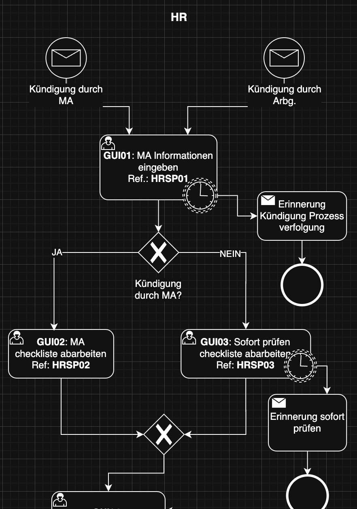
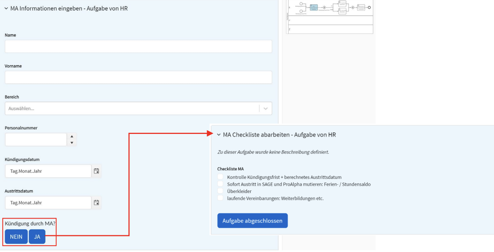
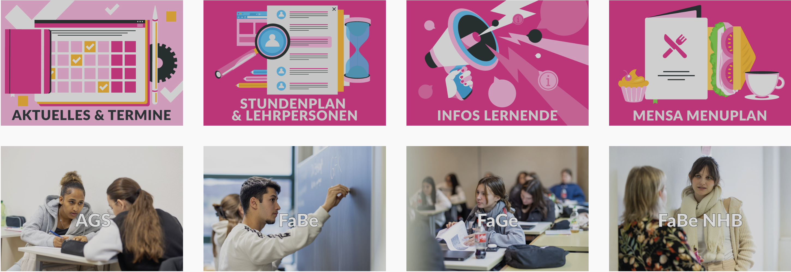
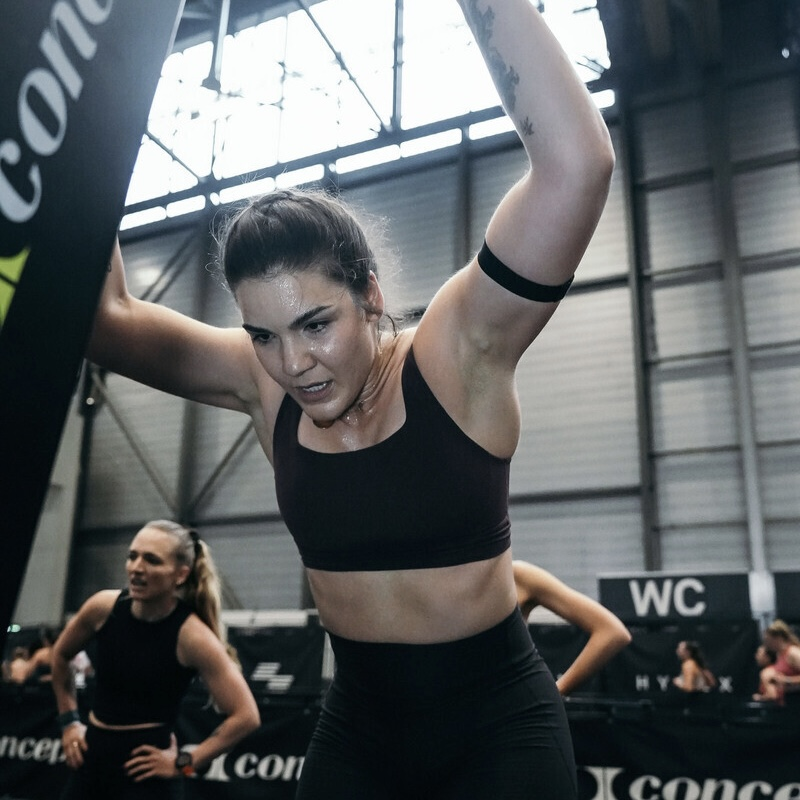
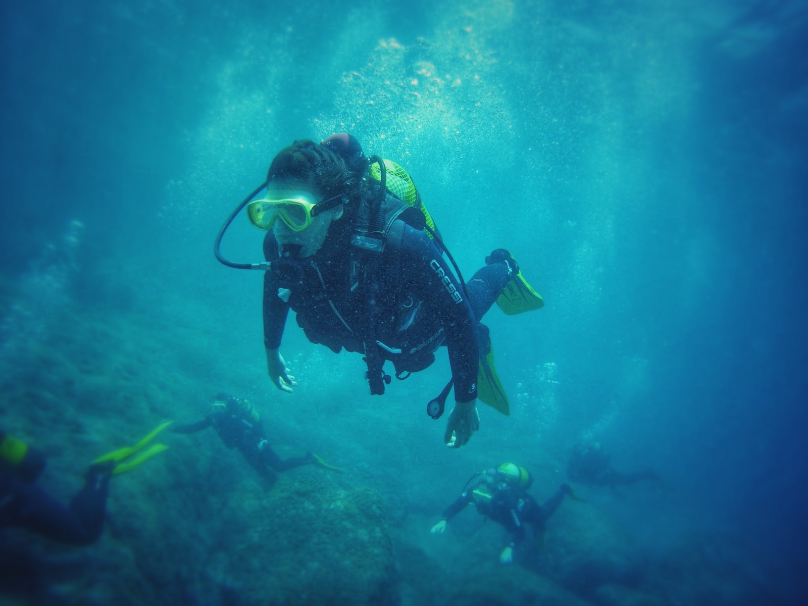

Learning Mindset
growthI learn through openness and action.
- Repetition and hands-on practice
- Feedback → refactor → improve
- Exchange when blocked, breaks for clarity
- Flexible in the path — but consistent in the goal
Curious | Resilient | Multifaceted
I’ve changed careers,
challenged expectations,
and I’m just getting started.
you?
Curious enough to scroll?
Let's find out what
we have in common.
Former health specialist, now a tech-affine specialist in the digital world. I develop, support, and rediscover myself in the digital world every day. Curiosity accompanies me at the intersection where people and the digital world meet.
First freelance project: I designed and developed a responsive website for a small business using HTML, CSS, JavaScript and WordPress.
(Note: The current site has since been changed.)

Built during an IoT module: a connected device with sensors, actuators, and WiFi – all within a 50 CHF budget. The project followed key phases from planning to programming and deepened my practical IoT understanding.


As part of my diploma thesis, I analyzed and digitally optimized the employee offboarding process of a company. Using BPMN modeling, interviews, and process analysis, I designed a new, more efficient workflow. Two technologies – RPA and WfMS – were evaluated for suitability. The result: a Workflow Management System offers greater flexibility and long-term scalability for complex HR processes. Implementation followed a structured waterfall model.

I led the development of a new school website using WordPress and a fresh theme. I handled setup, subdomain configuration, and design implementation with custom CSS. Throughout the project, I deepened my knowledge of WordPress architecture, explored and evaluated different plugins, and coordinated closely with the IT lead and school director. All tasks were completed using internal resources.

On October 12, 2025, I completed my first HYROX Double race in Geneva. After just three months of training, my training partner and I spontaneously decided to sign up for a HYROX Double race. We had no real idea how fast or strong we would be — until we crossed the finish line and saw our time: 1 hour 32 minutes. But more important than the time was what we discovered along the way: what we are capable of achieving as a team, and how much fun the challenge truly was. We grew together and faced the challenge side by side.

On January 18, 2026, I completed my first HYROX Solo race in St. Gallen. My goal time was 1 hour 30 minutes, but due to a foot injury, I finished in 1 hour 50 minutes. Still, the experience reminded me that life isn’t a rigid plan — it’s something that constantly changes as circumstances evolve. Now I have a time to work with. The goal is progress.
I thought: I’ve built enough websites professionally — now it’s time to develop my own platform, a one-page site that truly describes me. I didn’t want to just take a template and call it my page. That wouldn’t have been me. No matter what I start, it’s important for me to leave a project having learned something new. In this case, it was working with the framework Tailwind CSS. The site shows only a fraction of everything I’m interested in — but it reflects how I think and build.

Two years ago, I earned my Open Water Diver license — a lifelong dream finally come true. For me, diving is a beautiful balance between fear and freedom.
On April 25, 2026, I will compete in my first ATHX race in Paris. This event will be a new challenge for me — similar to HYROX, but with a stronger focus on strength, endurance, and technique. I’m curious to see how the race will feel and how far my progress will take me by that day.
“Hey Miray, you would be a good coach.” I don’t remember how many times I heard that sentence from people around me — but at some point, it stayed. Today, I volunteer at the Arche in Zurich , supporting young people. For me, it’s 90 minutes. For them, it can be 90 minutes that shape something bigger — how much confidence they build in mathematics, how much they dare to ask questions, how they see their own potential. I value people who make their knowledge accessible to those who want to learn and grow. And that is exactly the opportunity I want to offer to other young people.
I learn fast, simplify complexity, and turn ideas into working systems — with steady progress over perfect plans.
Tools I work with.
I learn through openness and action.
I look beyond individual tasks to understand processes and long-term impact.
I break things down until they’re simple and clear.
I focus on continuous progress.
© 2026 Miray Kaptancik. All rights reserved. Impressum Datenschutz